Nimm Kontakt mit mir auf.
Meine Gemälde wachsen aus vielschichtigen Texturen und organischen Strukturen. Acryl, Tusche und Aquarell überlagern sich, bis etwas Unerwartetes zum Vorschein kommt. Jedes Werk verbindet ausdrucksstarke Gesten mit stiller Absicht. Atmosphäre und Tiefe finden ihren eigenen Weg an die Oberfläche.
Verwurzelt in der zeitgenössischen abstrakten Kunst, entfalten diese Arbeiten eine eigene Präsenz. Sie bringen Lebendigkeit in moderne Räume und laden dazu ein, dem Zusammenspiel von Farbe, Form und Entstehung nachzuspüren.
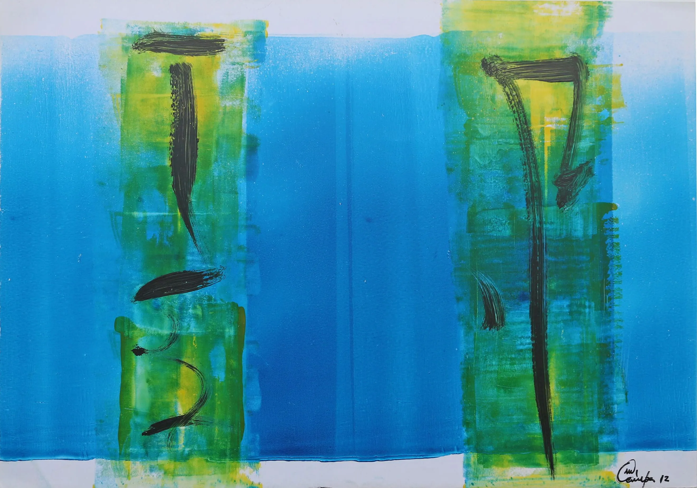
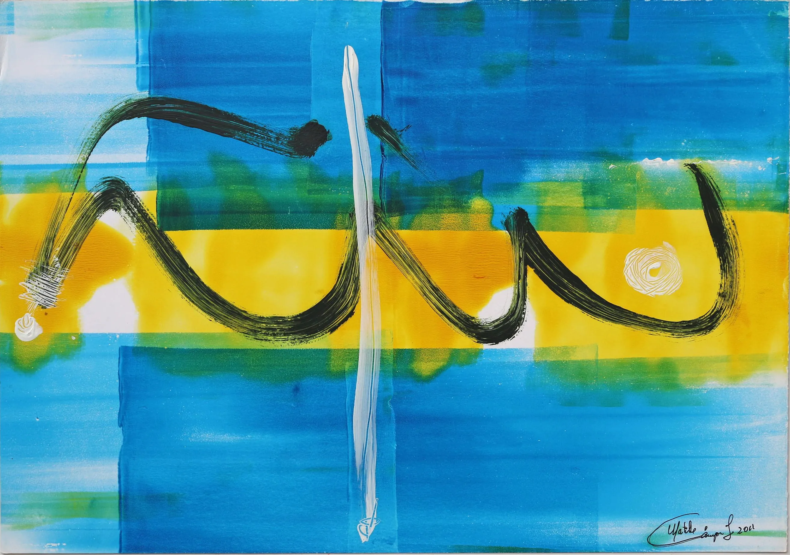
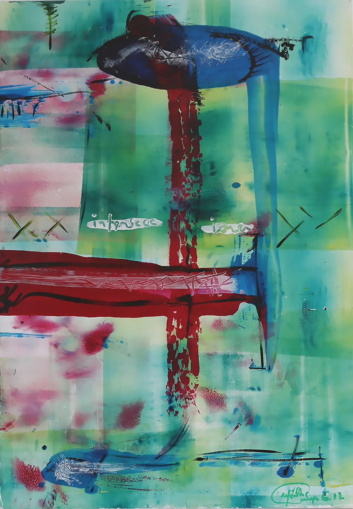
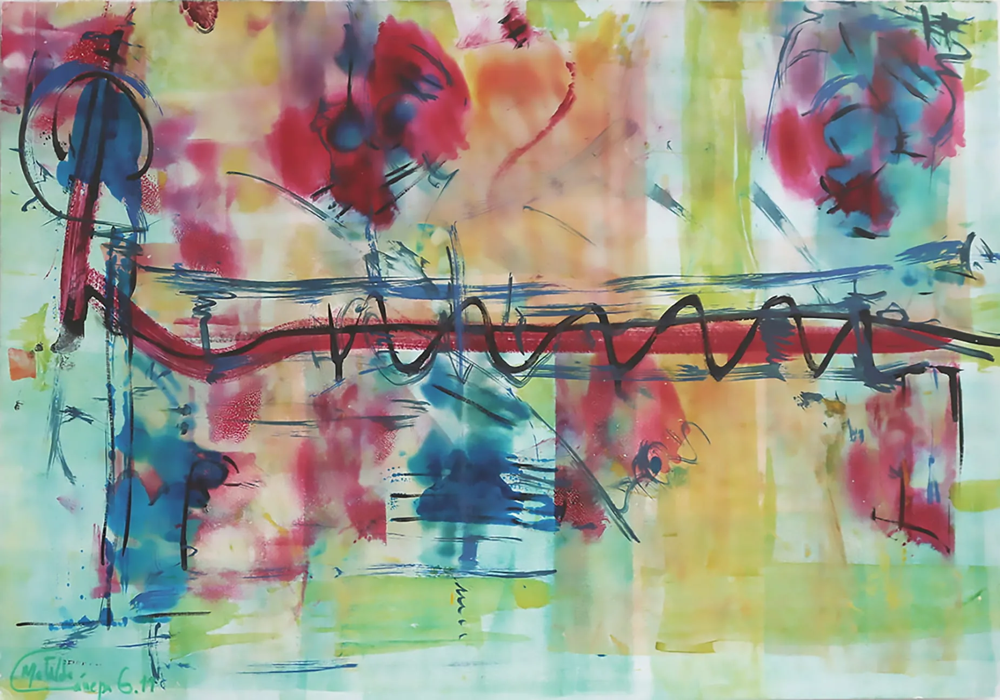
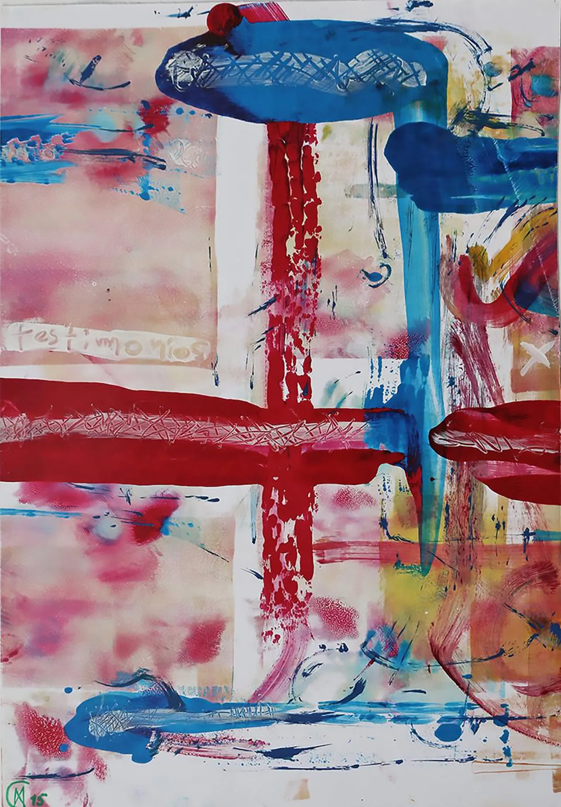
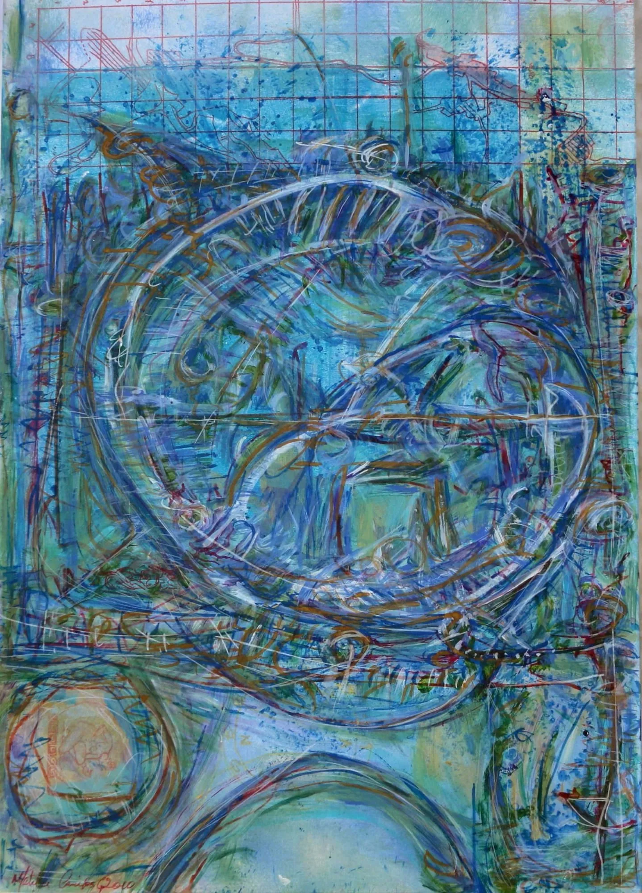
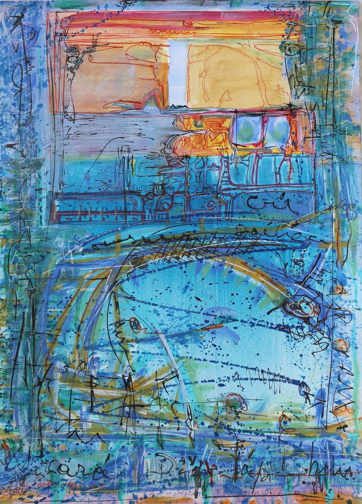
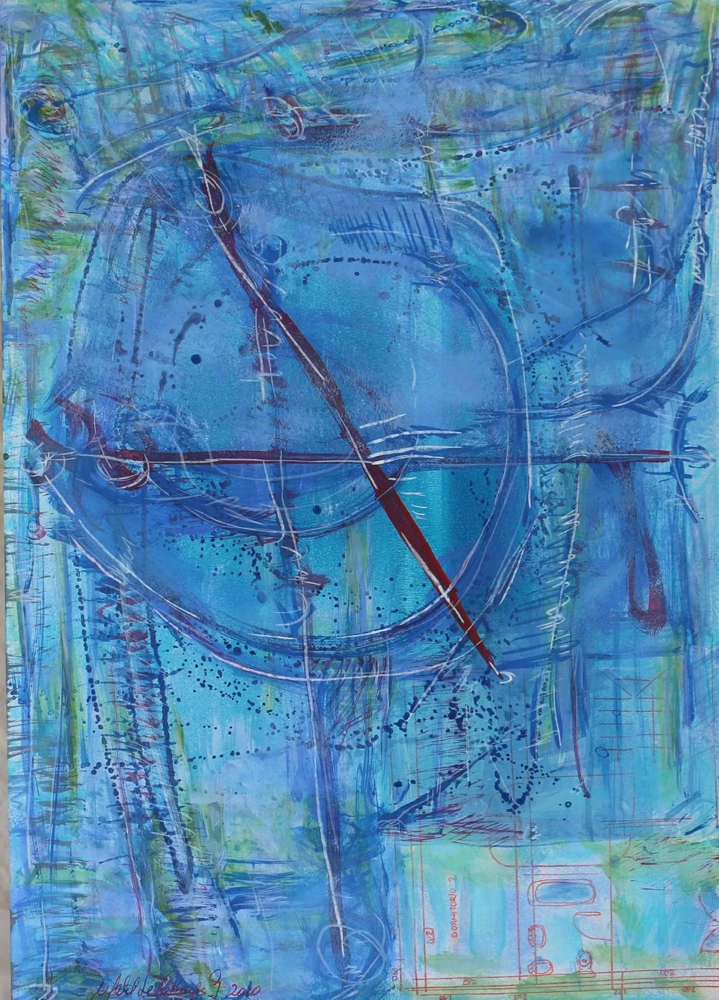
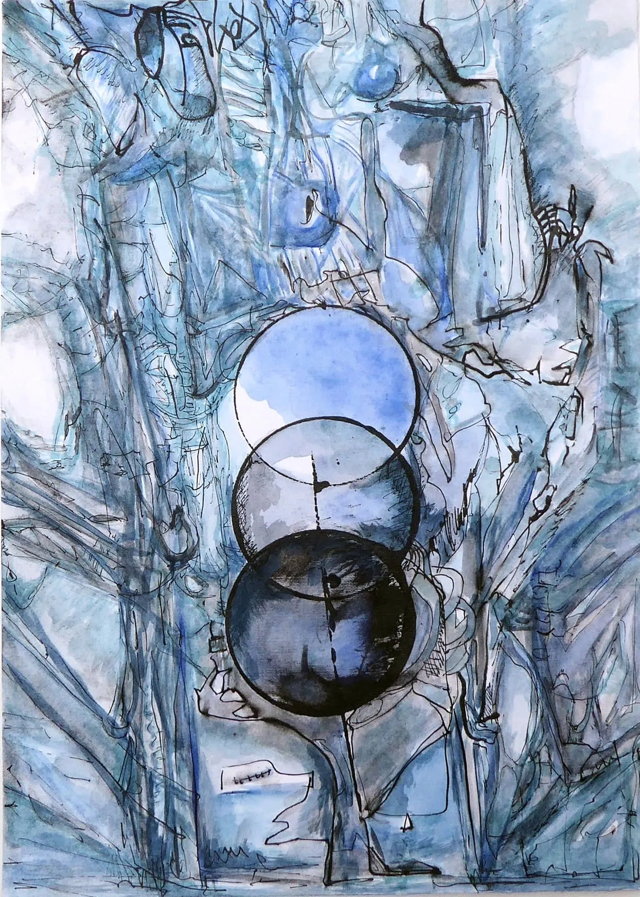
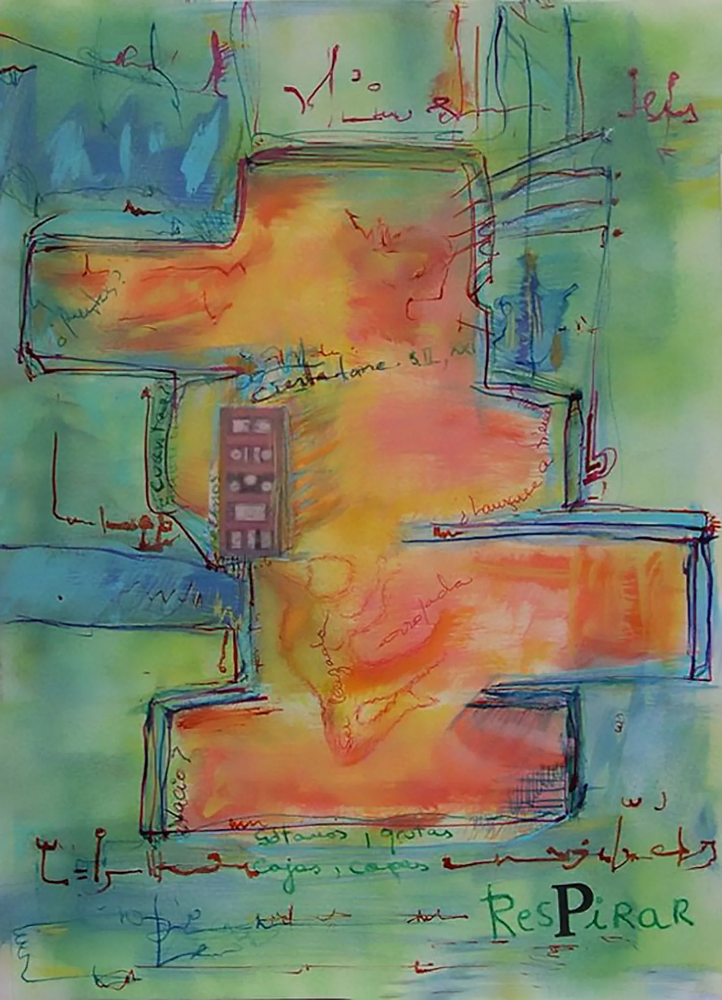
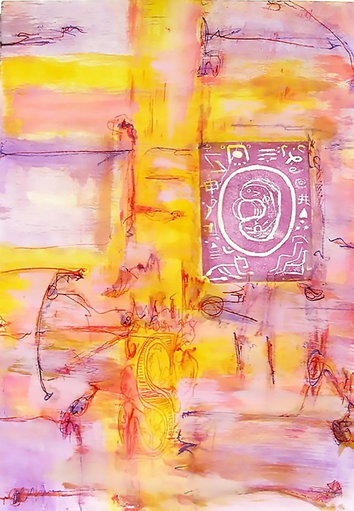
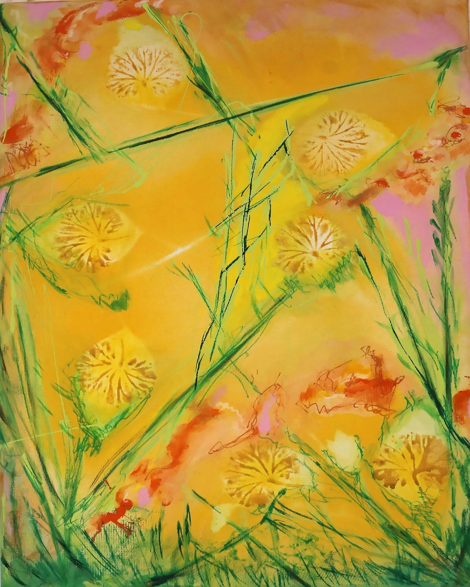
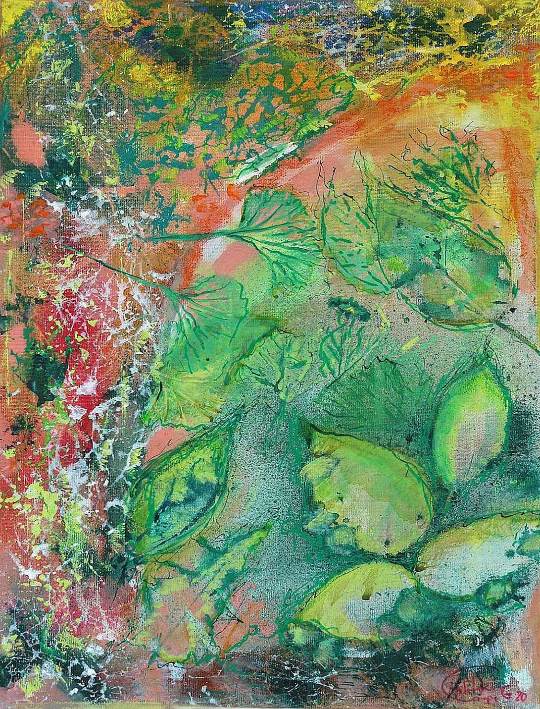
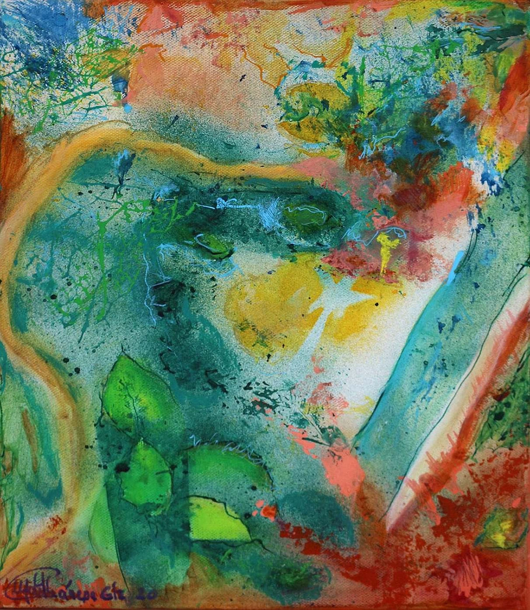
Meine Gemälde sind abstrakt, und doch tragen sie immer eine Erinnerung in sich. Wenn ich vor einem leeren Blatt Papier stehe, weiß ich nie genau, ob ich etwas Neues beginne oder zu etwas Vertrautem zurückfinde. Aus diesem Nichtwissen entsteht der erste Strich.
Ich habe Papier schon immer geliebt. Es nimmt alles auf: Aquarell darf darauf fließen und sich entfalten, Acryl hinterlässt seine Spuren, Tusche dringt tief in die Fasern ein, und Pastell legt sich sanft auf die Oberfläche. Jedes Material hat seine eigene Sprache und verlangt seine eigene Geduld. Ich lasse mich darauf ein und folge, wohin es mich führt.
Farbe ist für mich weit mehr als Dekoration. Sie hat Temperatur, Bewegung und Richtung – Gelb wärmt, Blau zieht nach innen, Rot lässt sich nicht zum Schweigen bringen. Schicht für Schicht wachsen meine Bilder, bis sie nicht mehr einen bestimmten Ort zeigen, sondern etwas von einer Begegnung bewahren: das Zusammenspiel von Absicht und Zufall, aus dem langsam eine verborgene Landschaft meiner inneren Welt sichtbar wird.
Interesse an einem Gemälde? · Schreib mir einfach
Mein Werk anfragenPreis auf Anfrage · Weltweiter Versand